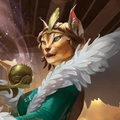

Kitt kommt aus der Stadt Cabaretti, genauer gesagt aus dem Ortsteil Capenna, wo sie die Beraterin des Bürgermeisters war, jedoch auch Straßenkünstlerin, wo sie als beste Sängerin der Stadt bekannt war. Nach einem versuchten Attentat auf sie, schloss sie sich dem wandernden Volk an
